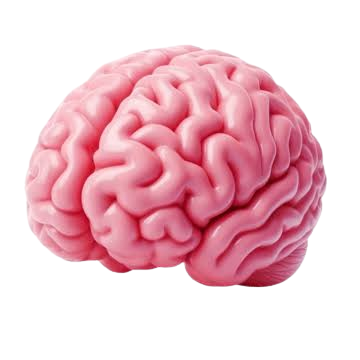
Sistem Saraf
Mengenal otak, sumsum tulang belakang, dan saraf tepi.
Pelajari bagaimana sistem saraf menerima informasi dan bagaimana tulang, sendi, serta otot bekerja sama menghasilkan gerakan.
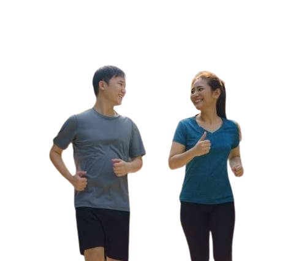
Pelajari sistem saraf dan sistem gerak melalui empat tahapan.

Mengenal otak, sumsum tulang belakang, dan saraf tepi.

Mempelajari tulang, sendi, dan otot manusia.
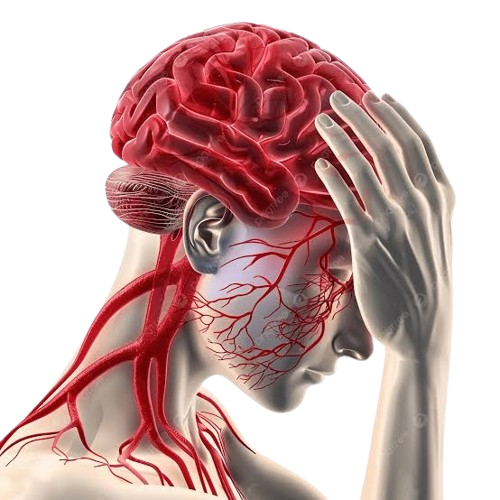
Mengetahui Kelainan apa saja yang terdapat dalam manusia.
Menguji pemahaman melalui pertanyaan interaktif.
Kenali struktur dan fungsi tubuh manusia.
Sistem saraf menerima rangsangan, mengolah informasi, lalu mengatur respons tubuh.
Deskripsi: pusat koordinasi di dalam tengkorak. Berat dewasa sekitar 1,2–1,5 kg; panjang 16–17 cm dan lebar sekitar 14 cm.
Fakta: diperkirakan memiliki sekitar 86 miliar neuron.
Cara kerja: menerima dan mengolah informasi, lalu mengirim perintah melalui impuls saraf.
Gangguan & penanganan: epilepsi, stroke, dan Parkinson. Penanganan dapat berupa obat, tindakan medis, dan rehabilitasi sesuai diagnosis.
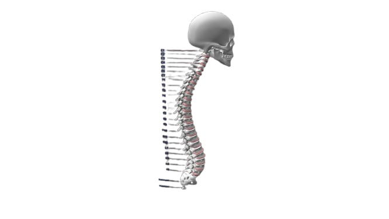
Deskripsi: jaringan saraf di dalam tulang belakang. Panjang dewasa sekitar 39–45 cm dengan diameter rata-rata sekitar 1 cm.
Fungsi: menghubungkan otak dengan tubuh dan menjadi pusat beberapa gerak refleks.
Cara kerja: meneruskan impuls sensorik ke otak dan membawa perintah motorik menuju tubuh.
Gangguan & penanganan: cedera atau peradangan dapat mengganggu gerak dan sensasi. Penanganan meliputi perawatan medis serta rehabilitasi sesuai penyebab.
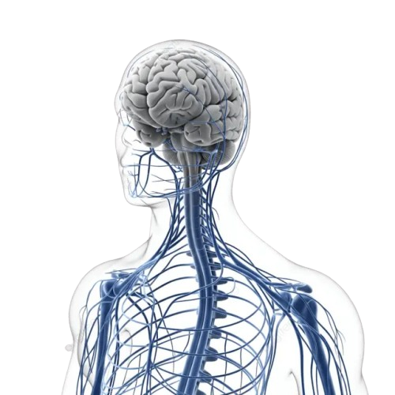
Deskripsi: saraf di luar otak dan sumsum tulang belakang. Terdiri dari 12 pasang saraf kranial dan 31 pasang saraf spinal.
Fungsi: menghubungkan sistem saraf pusat dengan reseptor, otot, dan organ.
Cara kerja: saraf sensorik membawa informasi masuk; saraf motorik membawa perintah keluar.
Gangguan & penanganan: neuropati dapat menyebabkan kebas, kesemutan, atau lemah. Penanganan berfokus pada penyebab, obat sesuai kebutuhan, dan terapi.
Tulang, sendi, dan otot bekerja sama untuk menopang tubuh dan menghasilkan gerakan.
Deskripsi: kerangka orang dewasa umumnya memiliki 206 tulang. Tulang paha merupakan tulang terpanjang, sekitar 40–50 cm pada banyak orang dewasa.
Fungsi: menopang tubuh, melindungi organ, menyimpan mineral, dan membantu pembentukan sel darah.
Cara kerja: tulang menjadi tuas yang ditarik otot melalui tendon.
Gangguan & penanganan: fraktur dan osteoporosis. Penanganan dapat berupa imobilisasi, perawatan medis, nutrisi, atau obat sesuai kondisi.
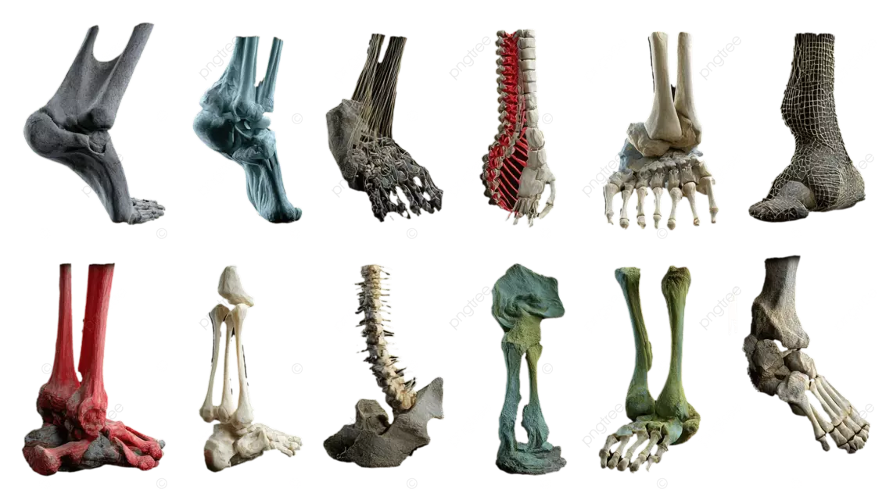
Deskripsi: tempat bertemunya dua tulang atau lebih. Contohnya sendi engsel pada siku dan sendi peluru pada bahu.
Fungsi: memungkinkan gerakan dan menjaga hubungan antartulang.
Cara kerja: bentuk sendi mengatur arah gerak; tulang rawan dan cairan sinovial mengurangi gesekan, sedangkan ligamen membantu kestabilan.
Gangguan & penanganan: keseleo, dislokasi, dan osteoartritis. Penanganan dapat meliputi pemeriksaan, obat, fisioterapi, atau tindakan medis.

Deskripsi: tubuh memiliki lebih dari 600 otot. Otot rangka melekat pada tulang melalui tendon.
Jenis: otot rangka, otot polos, dan otot jantung.
Cara kerja: serat otot berkontraksi dan menarik tulang sehingga terjadi gerakan.
Gangguan & penanganan: kram, cedera otot, dan tendinitis. Penanganan disesuaikan dengan penyebab, misalnya pemulihan bertahap dan fisioterapi.
Gerak refleks adalah respons otomatis dan cepat terhadap rangsangan tertentu.
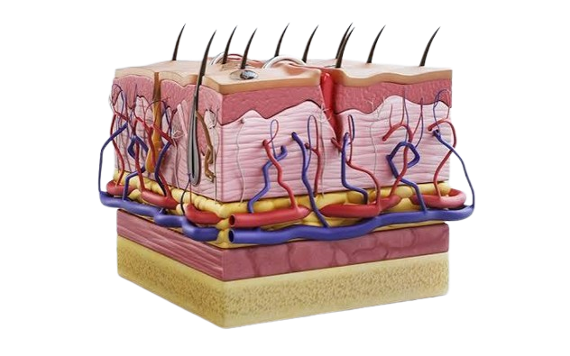
Mendeteksi sentuhan, tekanan, suhu, atau rangsangan yang berpotensi merusak jaringan, lalu memulai sinyal saraf.
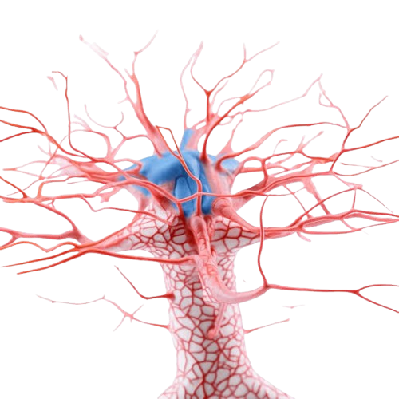
Membawa impuls dari reseptor menuju sumsum tulang belakang melalui jalur saraf sensorik.
Mengolah sinyal refleks dan meneruskannya ke neuron motorik, sering kali melalui interneuron.
Mengirim perintah dari sumsum tulang belakang menuju otot sebagai efektor.
Menerima sinyal motorik, berkontraksi, lalu menggerakkan anggota tubuh menjauh dari rangsangan.
Kulit mendeteksi rangsangan panas, impuls menuju sumsum tulang belakang, lalu perintah dikirim ke otot untuk menarik tangan. Informasi juga diteruskan ke otak agar rangsangan disadari.
Gerak sadar dilakukan dengan sengaja dan melibatkan pengolahan informasi oleh otak.
Mata melihat buku. Saraf optik membawa informasi visual ke otak untuk dikenali dan diproses.
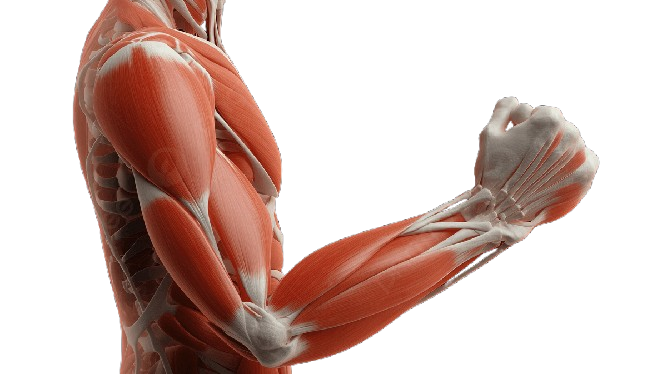
Otak merencanakan gerakan dan mengirim perintah melalui saraf motorik menuju otot.
Otot bahu, lengan, dan tangan bekerja terkoordinasi untuk meraih serta mengambil buku.
| Aspek | Gerak sadar | Gerak refleks |
|---|---|---|
| Pengendalian | Disengaja | Otomatis |
| Pemrosesan awal | Otak | Sumsum tulang belakang atau batang otak |
| Contoh | Mengambil buku | Menarik tangan dari rangsangan panas |
Gangguan tubuh dapat memengaruhi postur, gerak, sensasi, dan koordinasi.
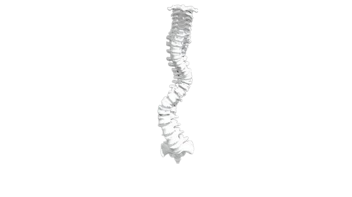
Tulang belakang melengkung ke samping seperti huruf C atau S. Penanganan dapat berupa pemantauan, brace, fisioterapi pendukung, atau operasi untuk kasus tertentu.
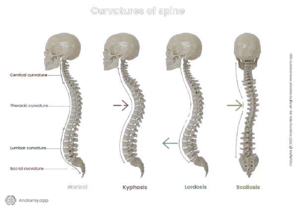
Lengkungan punggung atas tampak berlebihan. Penanganan bergantung penyebab, misalnya latihan terarah, brace, atau tindakan medis.
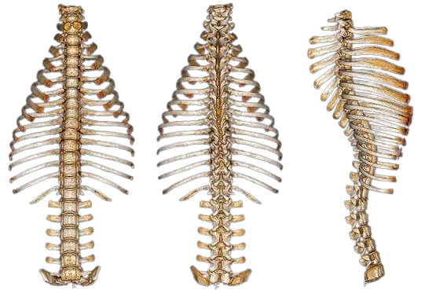
Lengkungan pinggang ke arah dalam terlalu besar. Penanganan disesuaikan dengan penyebab dan keluhan, misalnya fisioterapi atau evaluasi medis.
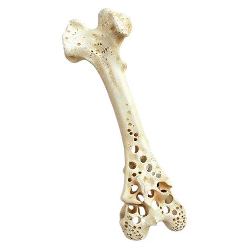
Kepadatan tulang menurun sehingga tulang lebih mudah patah. Penanganan meliputi evaluasi medis, nutrisi, aktivitas sesuai kemampuan, dan obat bila diperlukan.
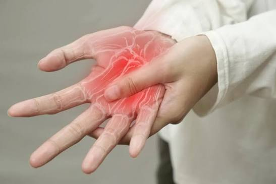
Gangguan saraf tepi yang dapat menyebabkan kebas, kesemutan, nyeri, atau lemah. Penanganan berfokus pada penyebab dan terapi gejala.
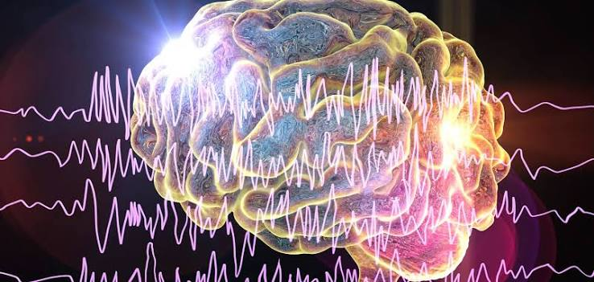
Kondisi dengan kecenderungan kejang berulang akibat aktivitas listrik otak yang tidak normal. Penanganan utama umumnya obat antikejang dari dokter.
Gangguan aliran darah atau perdarahan di otak. Ini kondisi darurat; penanganan segera dan rehabilitasi dapat diperlukan.
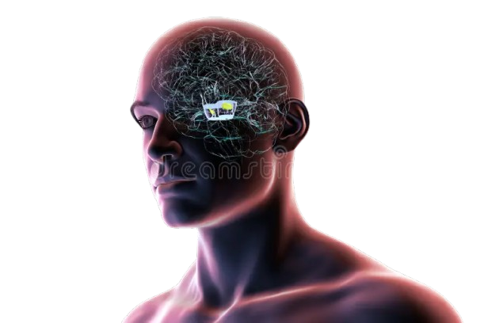
Gangguan saraf yang memengaruhi gerakan, misalnya gerak melambat, kaku, atau tremor. Penanganan dapat berupa obat dan rehabilitasi.
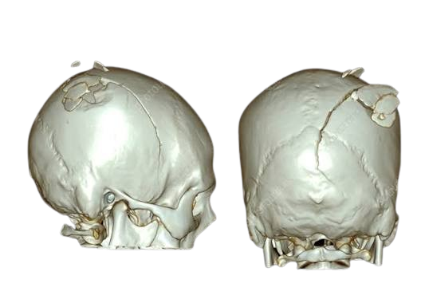
Tulang retak atau patah. Penanganan dapat berupa bidai, gips, atau operasi sesuai kondisi.
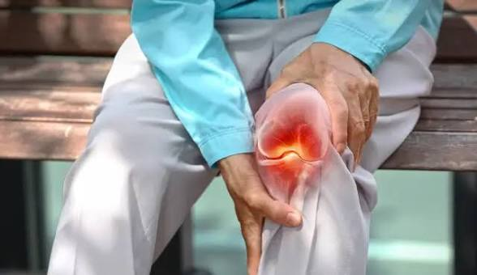
Perubahan pada sendi yang dapat menimbulkan nyeri dan kaku. Penanganan dapat mencakup latihan, obat, fisioterapi, atau operasi.
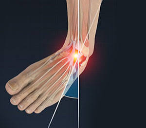
Cedera ligamen atau serat otot. Penanganan bergantung tingkat cedera dan dapat memerlukan pemeriksaan serta fisioterapi.
Pilih gambar untuk melihat detailnya.
Pusat koordinasi tubuh.

Penyangga tubuh manusia.
Penggerak aktif tubuh.
Jalur komunikasi tubuh.
Penghubung antar tulang.
Menerima Rangsangan.
Jalur komunikasi saraf.
Menerima rangsangan.
Penyangga dan penggerak tubuh.
Uji pemahamanmu mengenai sistem saraf dan sistem gerak.
Digital Human Body Explorer
Human Body Explorer merupakan media pembelajaran anatomi manusia berbasis digital yang dirancang untuk membantu siswa memahami sistem saraf dan sistem gerak manusia.
Website ini menggunakan pendekatan eksplorasi visual, materi interaktif, dan kuis untuk membantu proses pembelajaran IPAS.